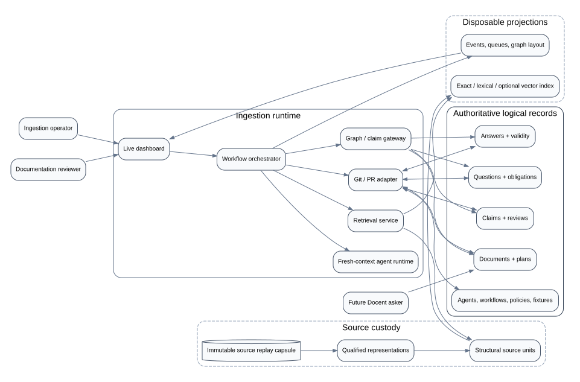
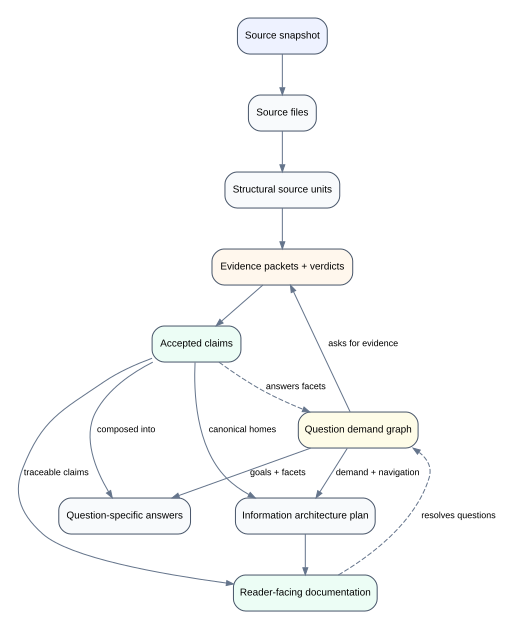
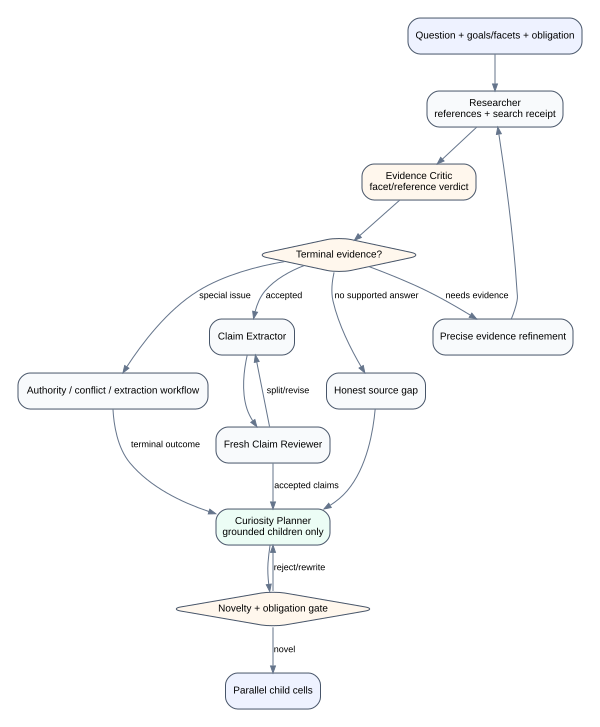
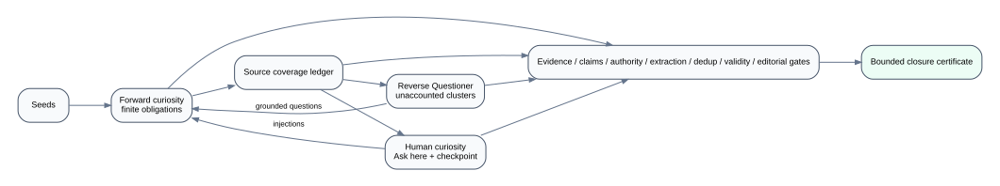
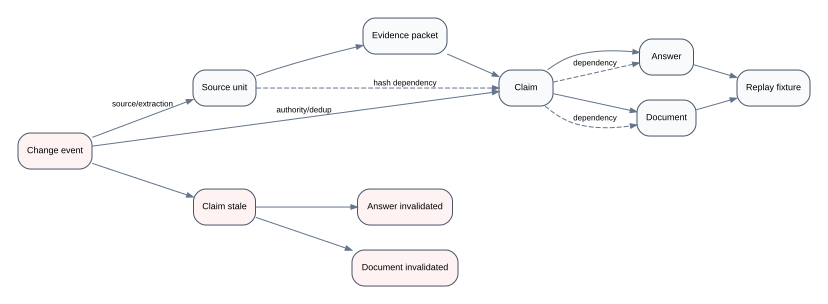
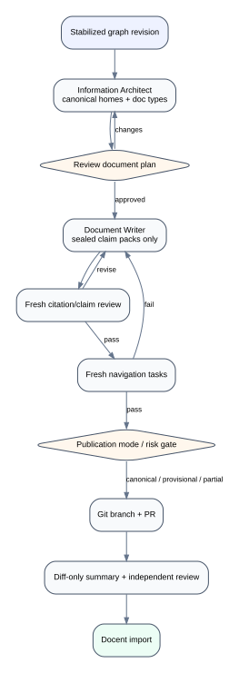
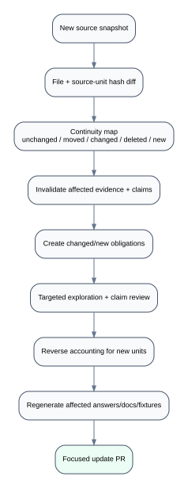
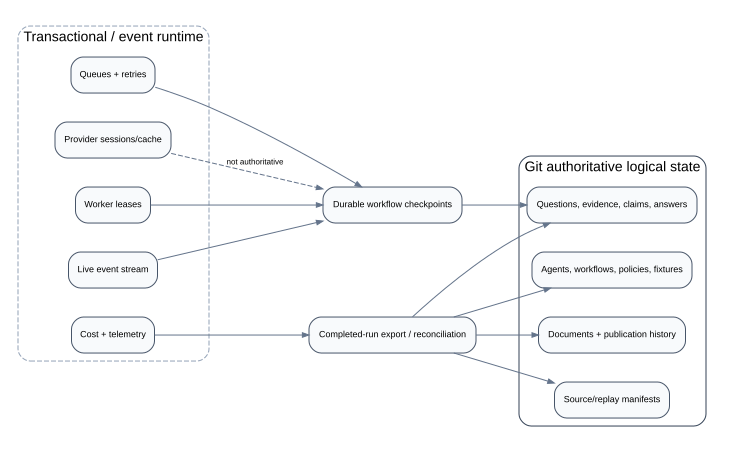

System boundary
Source custody, runtime orchestration, and Git logical state

v3 separates the knowledge layers and splits the old Questioner into a strict Evidence Critic and a separate Curiosity Planner. The result is easier to test, safer to deduplicate, and capable of precise downstream invalidation.
Questions run alongside this chain as the demand and navigation graph. They ask for evidence, consume claims through answer compositions, and influence the information architecture without becoming the sole canonical container for facts.








ResearcherEvidence CriticClaim ExtractorClaim ReviewerCuriosity PlannerReverse Questioner
Evidence Critic: “Do these references completely and honestly support this question?” Curiosity Planner: “Given the terminal result, what new source-grounded obligations deserve a child question?”
The Evidence Critic cannot create child questions. The Curiosity Planner cannot change the current evidence verdict. Both run in fresh contexts with separate schemas and fixtures.
See plan/README.md and the work breakdown.